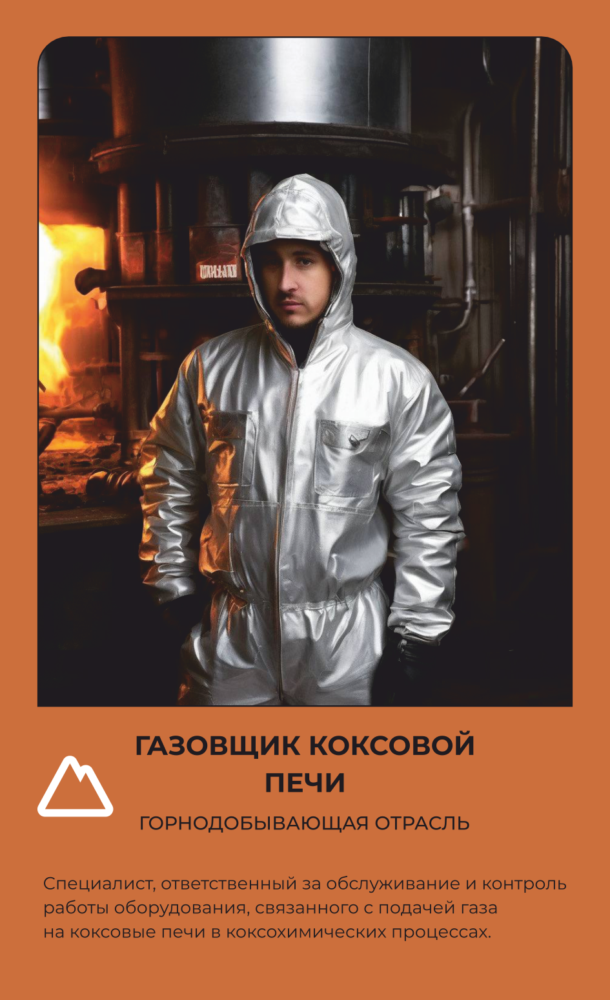

ГОРНО-ДОБЫВАЮЩАЯ
Газовщик коксовой печи
Управляет коксовой печью, из которой выходит топливо для металлургии.
Основной вид деятельности
Специалист, ответственный за обслуживание и контроль работы оборудования, связанного с подачей газа на коксовые печи в коксохимических процессах.
Что делает на рабочем месте
Газовщик коксовой печи следит, чтобы уголь в камерах коксовой батареи прогревался без доступа воздуха и превращался в кокс — твёрдое углеродистое топливо, без которого не работает ни одна доменная печь. Он настраивает подачу газа и его давление по печам, регулирует температуру обжига и следит за состоянием регенераторов, которые возвращают тепло в систему. Рядом с печью работают коксовыталкиватель, двересъёмная машина и тушильный вагон — газовщик координирует их взаимодействие и вмешивается вручную при малейшей неисправности оборудования. Обнаружив отклонение в давлении или утечку, немедленно устраняет проблему, поскольку коксовый газ токсичен и взрывоопасен. Всё сделанное фиксирует в журналах и передаёт сменщикам. Из-за жара и загазованности на площадке носит огнестойкий костюм, сигнальный жилет, каску и СИЗОД с противогазовым фильтром — без них находиться у печи нельзя.
Что производит
Кокс — твёрдое топливо для доменных печей, получаемое при обжиге угля без доступа воздуха.
Оборудование и инструменты
Спецодежда
Костюм из огнестойких материалов для защиты от повышенных температур ИЛИ Комплект для защиты от повышенных температур
Жилет сигнальный класса защиты 2
Белье нательное
На наружных работах зимой дополнительно:
Костюм из огнестойких материалов на утепляющей прокладке по поясам
Белье нательное утепленное
Спецобувь
Ботинки кожаные с защитным подноском ИЛИ Сапоги кожаные с защитным подноском
Носки
На наружных работах зимой
Ботинки кожаные утепленные с защитным подноском ИЛИ
Валенки с резиновым низом
СИЗ
Рукавицы ИЛИ перчатки для защиты от повышенных температур и расплавленного металла
Перчатки с полимерным покрытием
Каска защитная
Подшлемник под каску
Очки защитные
Наушники противошумные (с креплением на каску) ИЛИ Вкладыши противошумные до износа
Средство индивидуальной защиты органов дыхания (СИЗОД) противоаэрозольное
Средство индивидуальной защиты органов дыхания (СИЗОД) противогазовое
Подшлемник утепленный (с однослойным или трехслойным утеплителем)
Перчатки с защитным покрытием морозостойкие с утепляющими вкладышами
Где учиться
Это официальное название и номер специальности в колледже или вузе — он понадобится при поступлении.
Где работать
Похожие профессии
Данные по профессии «Газовщик коксовой печи», отрасль «Горно-добывающая». Зарплата — оценочная вилка по региону.